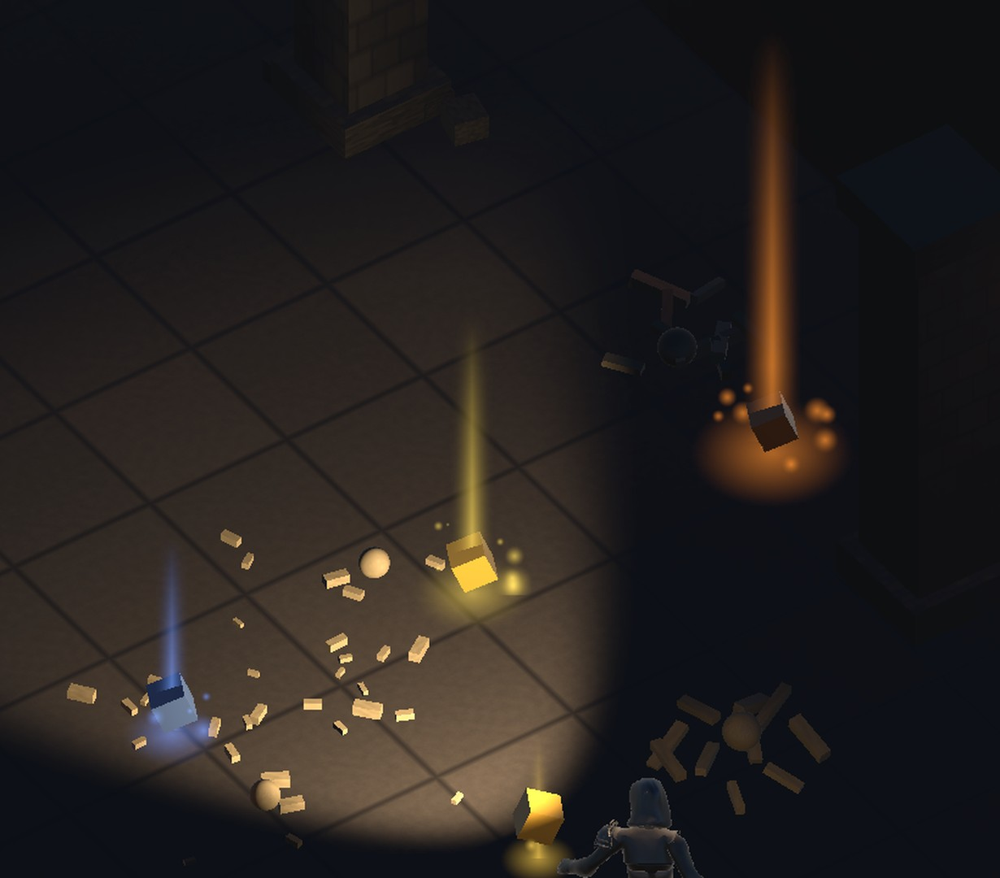
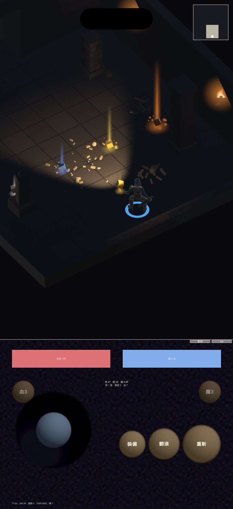

地城迴響 · 掉落演出與小地圖
在這之前擊殺只是數值默默變動加一行字。現在金幣與裝備都生成實體， 帶稀有度對應的光柱，走過去才收。

| 稀有度 | 光柱高 | 光柱寬 | 高寬比 | 每秒粒子 |
|---|---|---|---|---|
| 普通 | 1.1 m | 0.20 | 5.5 | 2 |
| 魔法 | 1.7 m | 0.26 | 6.5 | 7 |
| 稀有 | 2.4 m | 0.32 | 7.5 | 14 |
| 傳奇 | 3.6 m | 0.42 | 8.6 | 26 |
第一版的光柱不是柱。寬度設 0.42～0.95，高寬比只有 2.6～3.6 倍 ——畫面上讀起來是一團柔光，低階的幾乎是個光球。收窄到 0.20～0.42 之後高寬比拉到 5.5～8.6 倍，柱狀才成立。高度完全沒動， 稀有度的階梯本來就靠它。

| 項目 | 之前 | 現在 |
|---|---|---|
| 尺寸 | 276 px | 184 px |
| 佔螢幕寬 | 22.9% | 15.2% |
| 佔遊戲區面積 | 3.6% | 1.6% |
| 底板不透明度 | 0.72 | 0.42 |
面積其實一直不大，但寬度佔比才是遮擋的關鍵——而且右上角正好是 相機朝向（yaw 35°）時敵人接近的方向。
有一項我沒驗到，先說清楚。拾取瞬間的光點爆發只存在 0.45 秒， 而且要玩家剛好走進 1.15 公尺內才觸發。這輪的截圖沒抓到那一幀。 程式碼有寫、掉落物確實會消失並進帳（面板的「金」會跳）， 但那個演出本身我沒有畫面證據，不拿「有寫」當作驗過。